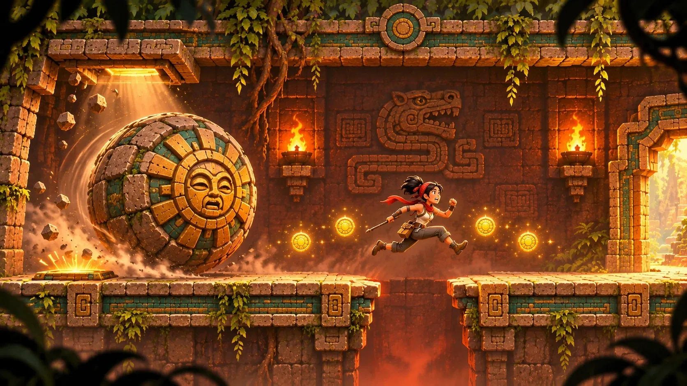

After the first finish
Classic mode
No Sun Gates, three lives, no skip. Game over means the whole level again.

Home / Game Types
Game type · Trap platformer
The builders' hidden way down through the temple walls, one trap-filled screen at a time.
A side-on, one-screen-at-a-time trap platformer inside the Sun Temple.
The builders never used the grand stair: they had their own way down, hidden inside the walls, and they trapped every inch of it. You found the crack. K'in found you. Every screen is a trap puzzle: spears from the ceiling, darts, crushers, pendulums, and a boulder that wants you flat. One touch and you're dust. Learn the screen, beat it on the next try, and keep your lives for the screens that matter.

How it plays
A fixed camera shows one screen at a time and cuts to the next when you cross the edge. Every trap is fully in view before you commit, so the second try feels clever, not lucky.
Treasure and three hidden Big Idols pull good players off the safe path.

The toolkit
Staff poke: trips wires and pressure stones from a safe distance and staggers guardians. Ember Charges: break cracked blocks and stun enemies, but step away from the hiss. Ropes: unroll from bronze anchors to reach secret ledges.
The main path never needs a rope or a charge. They are for treasure, so using them is greed, never a dead end.
Level 1
Fourteen screens in a zig-zag down through the pyramid's wall, then a lift up to the hidden Sun Door. Four Sun Gates save your progress along the way.


| Screen | What it teaches |
|---|---|
| The Crack | Move, jump, and poke the tripwire before the spear finds you. |
| Dart Hall | Ember Charges, a cracked floor with gold below, and a pressure stone you poke from afar. |
| Guardian Gallery | The first Risen Guardian, and a crumbling walkway above it. |
| The Sealed Floor | Read the mural, press the plates in its order: serpent, jaguar, eagle. |
| Bat Shaft | Drop down staggered ledges between two cave bats. |
| Pendulum Hall | Two blades half a swing apart, and a rope up to the first Big Idol. |
| Fire Vents | Three vents fire as a wave; ride right behind it. |
| Crusher Chamber | Two crushers on a five-second cycle, and a wall worth blowing open. |
| The Long Drop | Big drops down a tall shaft, with darts on the second ledge. |
| Boulder Run I | A plate clicks, a boulder drops. Run, and jump the pit at full speed. |
| Boulder Run II | Duck into the slot and let the boulder smash the wall for you. |
| Spear Corridor | Spike strips rise as a wave; a rope leads to the third Big Idol. |
| Calendar Lift | A faster guardian, then a calendar stone that lifts you up. |
| The Sun Door | A crumbling chain you must not stop on, and someone waiting at the door. |
Fair on the second try
The first time you near a trap, K'in flies to it, glows and says one line. Never twice.
After a death, the thing that killed you glows for three seconds, with a hint.
After three deaths on one screen, she offers to show the builders' path.
After six, she can carry you to the next screen, for a price in points.
The rival
A scratched note on the first wall says she was here. At the Sun Door, Kaya's golden Echo waits with folded arms: “You took the trapped way down? I took the stairs.”
Later, her Echo runs the level at par time, and beating her is what gold means.
After the first finish
No Sun Gates, three lives, no skip. Game over means the whole level again.
Coming next
The Drowned Cisterns, with water as a timer, and the Shifting Vault, whose walls move between your deaths.
Into the series
The same traps with the same timings appear in Trap Galleries, and in the flagship a cracked wall can open into a side-view passage.